Data Science for Electron Microscopy
Week 1: Python crash course & the EM data deluge
Prof. Dr. Philipp Pelz
FAU Erlangen-Nürnberg
Institute of Micro- and Nanostructure Research


Welcome to Data Science for Electron Microscopy
- A 13-week course at the intersection of materials science, electron microscopy, and data-driven methods.
- You do not need to be a programmer — we start from zero Python today.
- By the end you will be able to build and evaluate a complete data-science pipeline on real EM data.
Course logistics
- Winter semester 2026/27: 13 weekly lectures (≈ 90 min each), no separate exercise class.
- One scaffolded self-study notebook per week (≈ 75 h total workload).
- Assessment: one graded exam: oral if fewer than 5 students take it, written if 5 or more.
- Time and room: Fridays 08:15–09:45, room 0.68 (Seminarraum).
- Course website: pelzlab.science/DataScienceForElectronMicroscopy — all slides and notebooks are public.
- AI tools are allowed, e.g. GitHub Copilot (free for students), Cursor (paid), molab (free hosted GPU notebooks via marimo).
Book that covers many topics of the course
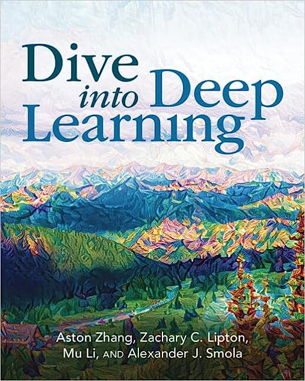
- Dive into Deep Learning Zhang, Aston et al., (2023): an interactive book with code, maths and discussions.
- Implemented with PyTorch, NumPy/MXNet, JAX and TensorFlow.
- Adopted at 500 universities in 70 countries.
- We use the PyTorch framework for our coding.
Course map — WS 26/27
| Wk | Date | Topic | Wk | Date | Topic |
|---|---|---|---|---|---|
| 1 | 23.10.2026 | Python crash course & the EM data deluge | 8 | 11.12.2026 | Small data: augmentation, transfer & self-supervision |
| 2 | 30.10.2026 | Learning from EM data: signal formation, noise & loss | 9 | 18.12.2026 | Unsupervised learning, autoencoders & latent spaces |
| 3 | 06.11.2026 | Linear algebra, PCA & spectral unmixing | 10 | 08.01.2027 | Attention, transformers & graph networks for EM |
| 4 | 13.11.2026 | Regression, optimisation & honest validation | 11 | 15.01.2027 | Uncertainty, Gaussian processes & autonomous EM |
| 5 | 20.11.2026 | From images to features: descriptors & tree ensembles | 12 | 22.01.2027 | Inverse problems I: regularisation, tomography & sensor fusion |
| 6 | 27.11.2026 | Neural networks & backpropagation | 13 | 29.01.2027 | Inverse problems II: ptychography, generative priors & synthesis |
| 7 | 04.12.2026 | CNNs & U-Nets for microscopy | — | 05.02.2027 | Exam revision |
Threads through all weeks: physics → loss/prior · honest validation · architecture as inductive bias · explainability taught with each model family.
STEM capabilities
- Imaging (Z–contrast, light-element, phase-contrast)
- 4D-STEM diffraction & orientation mapping
- Spectroscopies (EELS/XEDS, plasmonics)
- Tomography down to every atom
- Simulation & data-science backbone
STEM operating modes
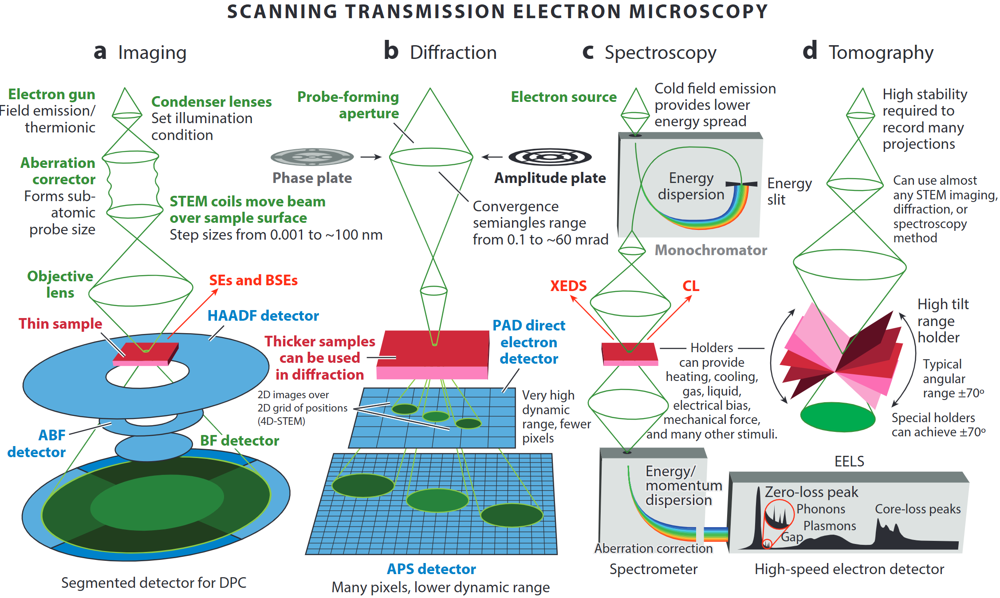
- A modern microscope can switch on the fly between
- incoherent imaging,
- diffraction/4D-STEM,
- EELS / XEDS spectroscopy, and
- tilt-series tomography
- incoherent imaging,
- “A synchrotron in a microscope”: one tool covers Å-to-µm length-scales and meV-to-keV energy-scales.
4DSTEM - Diffraction from a crystalline sample
- Drag the probe across the polycrystalline sample — each position yields a CBED pattern.
- Ideally, the diffracted signal is a 2D Fourier transform of the projected potential × probe intensity.
- Bragg-disk positions/intensities fingerprint local structure and orientation.
- Sliders: convergence semiangle (nanobeam ↔︎ ptychographic) and defocus.
- Interpretation is complicated by dynamical scattering, overlapping grains, background.
4DSTEM - Diffraction from an amorphous sample
- Disorder slider rotates random Si sub-volumes — destroys medium-/long-range order while keeping short-range tetrahedral bonding.
- Diffraction evolves from sharp Bragg spots → amorphous rings / structure-factor halos.
- Rotate the 3D structure; watch nearest-neighbour angular correlation update live.
- Interpretation is harder than crystal diffraction (dynamical scattering, overlapping grains).
4DSTEM - Design of experiments
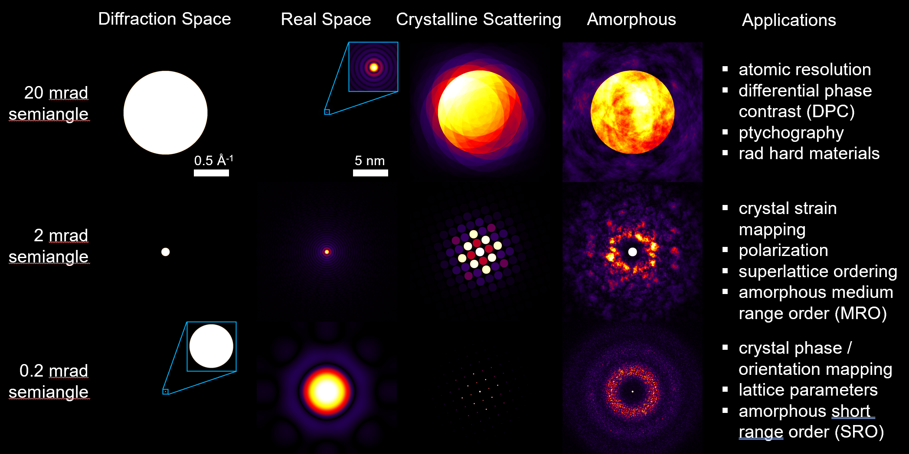
Single-atom Z-contrast
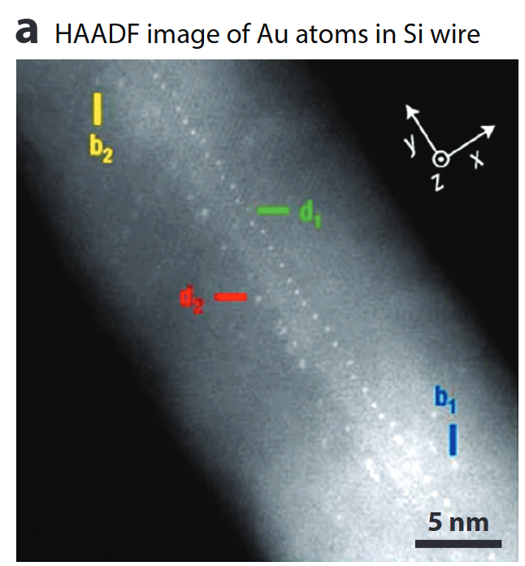
- HAADF collects high-angle incoherent scattering → intensity ∝ Z^1.6 – Z^1.9
- Detects & counts individual heavy atoms, even inside a nanowire.
- Sub-picometre column-position metrology enables strain & segregation studies.
Calibrated composition imaging
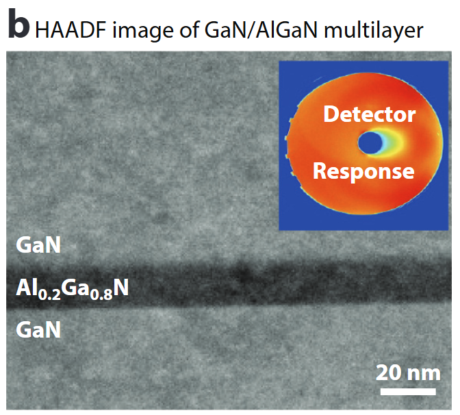
- Absolute detector-response calibration converts HAADF signal to atomic areal density .
- Enables nm-scale composition profiles (here Al₀.₂Ga₀.₈N) & local thickness determination to ≈1 nm.
Seeing light elements – ABF/BF
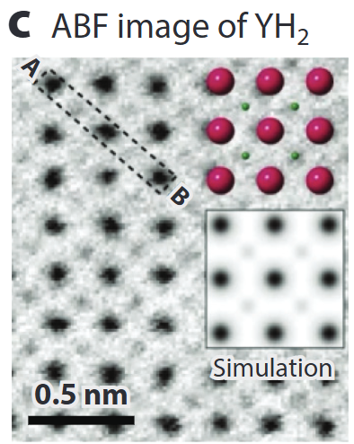
- Annular Bright-Field (ABF) records low-angle transmitted beam: simultaneously heavy & very light atoms (H, Li, O) .
- Quantitative contrast modelling (multislice + frozen phonon) allows thickness & defocus refinement.
Mapping internal fields – DPC
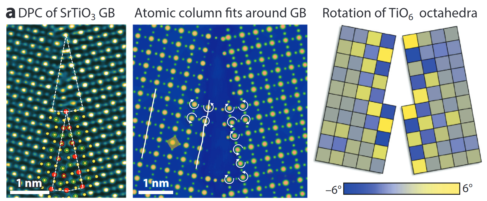
- Segmented / pixelated detectors yield differential phase-contrast (DPC) images.
- Linear to projected electric-field; with sample flip or advanced analysis → magnetic induction too .
- Here: TiO₆ octahedra rotations and GB polarity resolved at the picometre level.
4D-STEM diffraction & orientation mapping
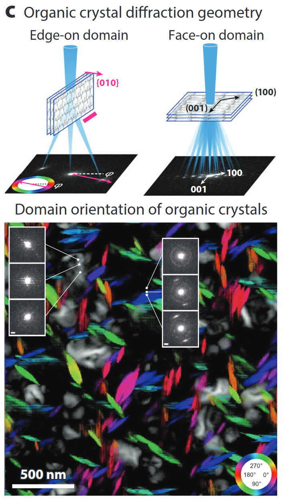
- Pixelated cameras record a CBED pattern at every probe position → 4D data cube.
- From disks, extract local strain, orientation, thickness, even (via ptychography) phases beyond the probe NA.
- Matching experiment to simulation (thermal + inelastic) achieves quantitative thickness/chemistry
Spectroscopy – EELS/XEDS
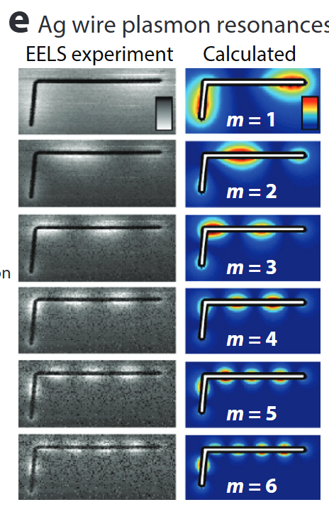
- STEM-EELS resolves plasmons (few eV), phonons (meV) & core-loss fine structure (bonding, oxidation).
- Combined with modelling (BEM, DFT, multiplet) for nanophotonic mode mapping .
- Parallel XEDS gives simultaneous 3-D elemental maps.
Atomic electron tomography
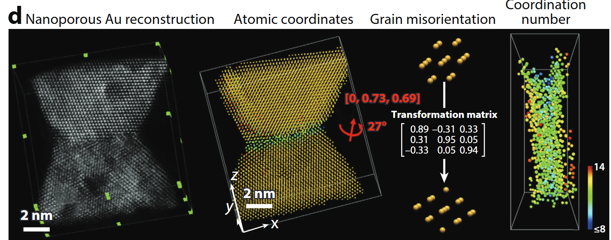
- Tilt-series HAADF/ptychography + iterative reconstruction → 3-D coordinates of every atom in ≤20 nm objects .
- Enables full strain tensors, defect cores, compositional ordering.
Simulation accelerators – PRISM
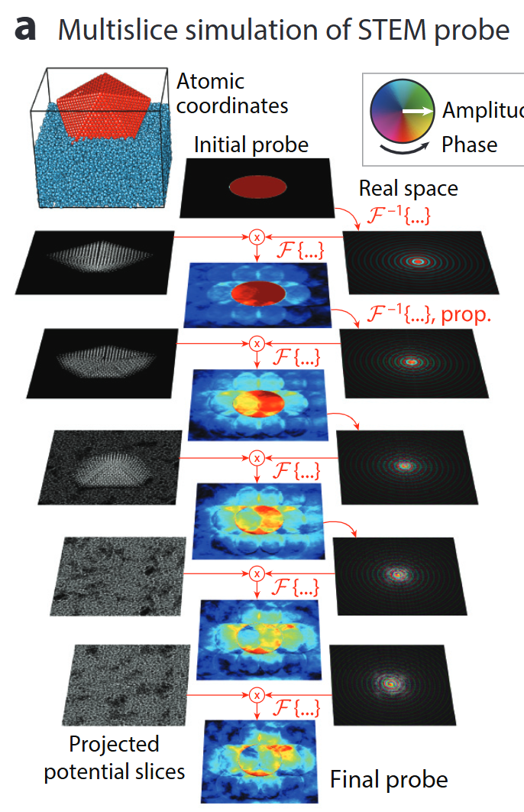
- Quantitative STEM hinges on ab-initio accurate multislice simulations.
- PRISM re-uses plane-wave slices → orders-of-magnitude faster with <1 % error .
- Powers real-time experiment steering & big-data 4D-STEM analysis.
Take-aways: what a modern STEM measures
- Modern aberration-corrected STEM delivers Å-resolution imaging, diffraction, spectroscopy & tomography within one instrument.
- Quantification (composition, fields, 3-D structure) now matches the resolution.
- Open-source simulation & Python toolchains are key enablers for truly quantitative materials science.
The data deluge: detector rates over time
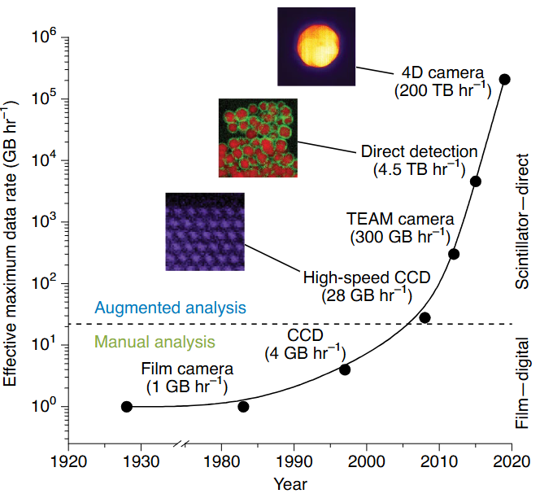
- Film era (1990s): ≈ 1 GB h⁻¹
- CCD/CMOS (2000s–2010s): 1–10 GB h⁻¹
- Direct-electron detectors (today): up to 200 TB h⁻¹
- That is a 10⁸× increase in two decades.
- No human can inspect petabyte-scale datasets by eye.
From data to insight: the three-layer framework
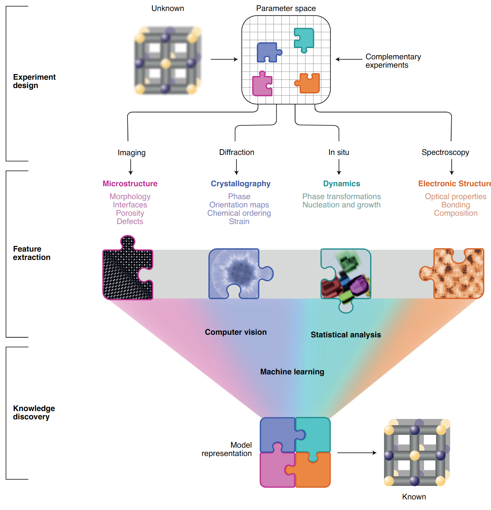
- Layer 1 — Experiment design: What to measure, at what dose, in what sequence.
- Layer 2 — Feature extraction: Turn raw pixel/spectrum data into structured descriptors.
- Layer 3 — Knowledge discovery: ML + simulation → structure, chemistry, dynamics.
- The layers form a feedback loop: discoveries suggest new experiments.
Manual vs. augmented EM workflow
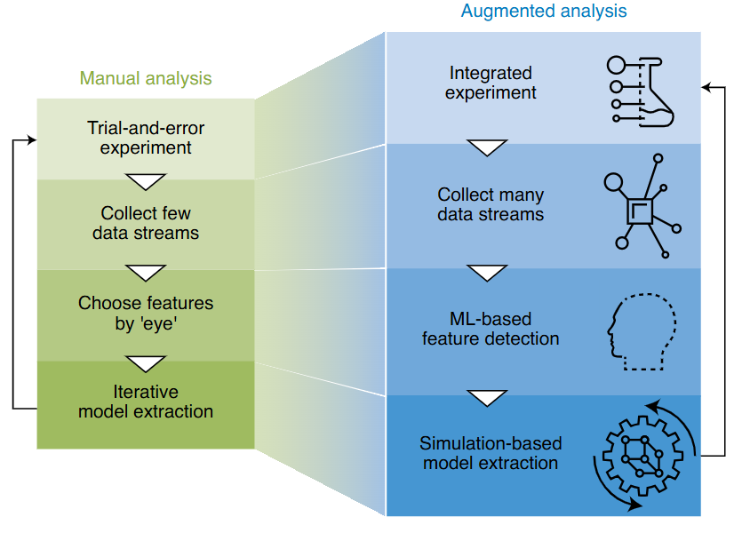
- Manual: Choose features by eye, collect one modality, iterate slowly.
- Augmented: Collect complete data streams, ML finds features automatically, simulation validates.
- Goal: Closed-loop, autonomous experiment steering.
EM modalities — the data landscape
- HAADF-STEM: intensity ∝ Z¹·⁶–Z¹·⁹ — heavy atoms appear bright; single-atom sensitivity.
- 4D-STEM: a 2-D diffraction pattern at every probe position → 4-D data cube (x, y, kx, ky).
- EELS/EDS: energy-loss/X-ray spectra at each pixel → chemical identity at nm resolution.
- Tomography: tilt-series → 3-D atomic coordinates with pm precision.
- Each modality produces a different tensor shape — this course teaches you to handle all of them.
The PSPP paradigm
- Processing → Structure → Property → Performance
- In EM: synthesis parameters → atomic structure (images/spectra) → material property → device behaviour.
- Each arrow is a potential ML task: regression, classification, inverse design.
- Key insight: structure mediates properties — you cannot skip it.
The CRISP-DM workflow — one EM example
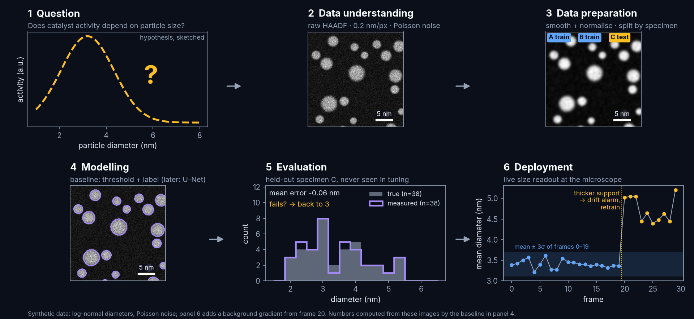
The steps loop back: a failed evaluation sends you back to data preparation, not to a bigger model.
PSPP × CRISP-DM: putting it together
- Phase 1 (understanding): identify which PSPP arrow is your task.
- Phase 2–3 (data): understand the tensor shape and noise model of your EM modality.
- Phase 4 (modelling): choose a model appropriate for that tensor shape.
- Phase 5 (evaluation): measure generalisation — not training accuracy.
- Principle: domain knowledge is not optional; it goes into every phase.
Python in one slide: why Python?
- Free, open-source, runs on any OS and in your browser (Google Colab).
- Readable syntax — code that reads close to pseudocode.
- Massive ecosystem: NumPy, SciPy, matplotlib, scikit-learn, PyTorch — all the tools this course uses.
- Interactive: Jupyter notebooks let you run one cell at a time and see results immediately.
- If you know MATLAB or any scripting language, Python will feel familiar within hours.
What is a tensor?
- A tensor is an n-dimensional array with a fixed numeric type.
- 0-D (scalar): a single number — one pixel value.
- 1-D (vector): a spectrum — 1024 energy channels.
- 2-D (matrix): a HAADF image — shape (512, 512).
- 3-D tensor: a spectral image (EELS map) — shape (256, 256, 1024).
- 4-D tensor: a 4D-STEM scan — shape (256, 256, 128, 128).
Running code in Google Colab
- Google Colab: a free Jupyter notebook environment in your browser, GPU-enabled.
- Go to colab.research.google.com — sign in with your Google account.
- Open or upload a
.ipynbnotebook file. - Shift+Enter runs the current cell and moves to the next.
- Runtime → Change Runtime Type → GPU (for deep learning, Weeks 6+).
- All this week’s code runs without a GPU — no special setup needed.
Hands-on in molab: PyTorch tensors & automatic differentiation
- Open in molab:

- Notebook file:
notebooks/unit01_tensors_autograd.py(marimo, also on GitHub). - Part 1, data manipulation Zhang, Aston et al., (2023): create, reshape, index, compute, broadcast, save memory, convert to NumPy.
- Part 2, automatic differentiation Zhang, Aston et al., (2023):
backward(), gradient accumulation, non-scalar outputs,detach(), control flow. - Exercises with automatic checks: ROI crop, 3-D broadcasting, \(\frac{d}{dx}\sin x\) by autograd, the chain rule for \(f(x) = (\log x^2)\sin x + x^{-1}\).

- marimo is reactive: change a cell or a slider and every dependent cell runs again.
- Every section has an EM example: Poisson images, the log scale for diffraction, frame averaging, threshold masks, scan-stripe removal.
Self-study this week
- Notebook:
notebooks/week01_python_numpy.ipynb— “Python & NumPy in 90 minutes.”- Variables, lists, functions, NumPy arrays, broadcasting, matplotlib.
- Final “your turn” exercise: crop and min-max-normalise a synthetic STEM-like image.
- Open in Colab:
 — no local installation needed.
— no local installation needed. - molab notebook:
 — finish the exercises that you did not complete in class.
— finish the exercises that you did not complete in class. - Goal: understand everything in both notebooks before Week 2.
- If you are stuck: the StudOn forum, or office hours (times announced on the website).
Looking ahead — Week 2
- Topic: “Learning from EM data: signal formation, noise & loss”
- Learning vs. classical analysis; white-, grey- and black-box models.
- The data-formation chain: specimen → interaction → detector → digitisation → metadata.
- Detectors, dose, Nyquist sampling & aliasing; Poisson vs. Gaussian noise.
- Noise model → likelihood → loss: why MSE is the wrong loss for low-count EM data.
- Prerequisite: complete the Week 1 notebook; you will need NumPy array operations.
Continue
References
Dive into deep learning, Aston Zhang, Zachary C. Lipton, Mu Li, & Alexander J. Smola.
Quantitative scanning transmission electron microscopy for materials science: Imaging, diffraction, spectroscopy, and tomography, Annual Review of Materials Research, Colin Ophus.
Towards data-driven next-generation transmission electron microscopy, Nature Materials, Steven R. Spurgeon, Colin Ophus, Lewys Jones, Amanda Petford-Long, Sergei V. Kalinin, Matthew J. Olszta, Rafal E. Dunin-Borkowski, Norman Salmon, Khalid Hattar, Wei-Chang D. Yang, Renu Sharma, Yingge Du, Ann Chiaramonti, Haimei Zheng, Edgar C. Buck, Libor Kovarik, R. Lee Penn, Dongsheng Li, Xin Zhang, Mitsuhiro Murayama, & Mitra L. Taheri https://doi.org/10/ghhtjq.

©Philipp Pelz - FAU Erlangen-Nürnberg - Data Science for Electron Microscopy